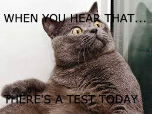

Some of my hobbies are drawing, reading, writing, and baking. I also play the violin. I also like coding, especially robots.
One reason I chose this class is because I like to code and I wanted to get better at coding.
The first project we did was a meme. The second was a pumpkin and the third was was cutting words out of an image.
Here are my pixler projects
